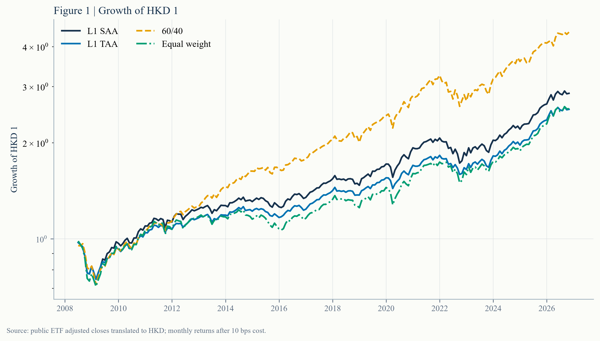
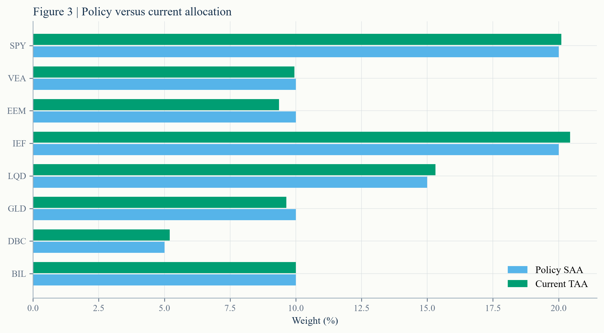

从观点到组合：基准赢了，流程留下了什么？ From Views to Weights: the benchmark won. What survives is the process.
一个公开的多资产影子组合，从冻结策略、月度调仓到风险贡献和收益归因，走完了完整研究闭环。同期 60/40 是赢家：5.86% 的静态配置和 5.20% 的趋势增强组合，都没有追上 60/40 的 8.43%。但这个项目真正留下的不是“跑赢基准”的故事，而是一套能被复核、能被否决、也能被继续维护的投资流程。 A public multi-asset shadow portfolio runs the full research loop: frozen policy, monthly rebalancing, risk contribution and return attribution. The 60/40 wins: both the 5.86% strategic portfolio and the 5.20% trend overlay trail its 8.43% annual return. What the project leaves behind is not a winning-alpha story, but an investment process that can be audited, rejected and maintained.
- 基准赢了。2008-06 至 2026-10 的 221 个月里，60/40 年化 8.43%、夏普 0.894；L1 TAA 年化 5.20%、夏普 0.703。The benchmark won. Across 221 months from June 2008 to October 2026, the 60/40 earned 8.43% a year with a 0.894 Sharpe; L1 TAA earned 5.20% with 0.703.
- 趋势层降低了波动，没有提高收益。权益趋势为 10 个月收益符号；当期三条权益腿全为正，因此战术组合接近战略配置。The trend overlay lowered volatility, not return. The signal is the sign of the trailing ten-month equity return; all three equity signals are positive, so the tactical portfolio remains near strategic weights.
- 资金权重不等于风险权重。三类权益占资金的 40%，却贡献约 61% 的模型方差。Capital weights are not risk weights. The three equity sleeves hold 40% of capital but drive about 61% of model variance.
- 研究可信度来自治理。策略版本冻结、调仓规则预先写明、负结果保留，并在下一次月末复核前不追溯修改。Research credibility comes from governance. The policy is versioned, the rebalance rule is written in advance, negative results are retained, and the record is never edited retrospectively.
摘要本文展示 L1 公开多资产影子组合：8 个美国上市 ETF、HKD 计价、月度再平衡、10 bps 单边换手成本假设，并用 10 个月权益趋势做有限战术覆盖。评价期为 2008-06 至 2026-10，共 221 个月。L1 SAA 年化 5.86%，L1 TAA 年化 5.20%；同期 60/40 代理组合年化 8.43%、夏普 0.894。结果显示分散化和趋势规则没有创造超额收益，但把“观点 → 权重 → 风险 → 归因 → 决策记录”的过程变成可复现系统。 AbstractThis note presents the public L1 multi-asset shadow portfolio: eight US-listed ETFs, HKD reporting, monthly rebalancing, a 10 bps one-way turnover cost assumption and a bounded ten-month equity trend overlay. The evaluation covers 221 months from June 2008 to October 2026. L1 SAA earned 5.86% a year and L1 TAA 5.20%; a 60/40 proxy earned 8.43% with a 0.894 Sharpe. Diversification and trend did not generate excess return. Their contribution was to turn “view → weight → risk → attribution → decision record” into a reproducible system.
关键词 SAA · TAA · 影子组合 · 风险贡献 · 收益归因 · 回测治理Keywords SAA · TAA · shadow portfolio · risk contribution · return attribution · backtest governance
01投资问题The investment question
这个项目不试图证明某个信号一定赚钱。它回答一个更接近资产配置前台的问题：给定一套明确的政策权重、风险约束和调仓规则，组合每个月应该如何从观点走到仓位，又如何在事后解释结果？This project does not try to prove that a signal must make money. It answers a question closer to an allocation desk: given explicit policy weights, risk constraints and rebalancing rules, how should a portfolio move from views to positions each month, and how should the result be explained afterwards?
因此，项目把研究分成四层：战略配置（SAA）、有限战术覆盖（TAA）、组合执行与成本、风险与收益归因。这个顺序也是买方投资流程的基本接口：观点不能直接变成交易，交易不能脱离风险预算，结果不能只报收益。The research therefore separates four layers: strategic allocation (SAA), a bounded tactical overlay (TAA), execution and costs, and risk and return attribution. That is also the basic buy-side interface: a view cannot become a trade directly, a trade cannot escape the risk budget, and results cannot be reported through return alone.
为什么它适合作为转型作品？它同时展示资产配置、Python 工程、回测纪律和投资备忘录写作，而且使用公开数据，不依赖任何内部材料。Why is it useful as a transition project? It demonstrates asset allocation, Python engineering, backtest discipline and investment memo writing in one place — using public data only.
02研究设计Research design
政策组合把资金分成 40% 权益、35% 固定收益与信用、10% 黄金、5% 商品和 10% 短债。所有资产都用美国上市 ETF 作为公开代理，把美元收益按 USD/HKD 换算成 HKD；没有汇率对冲。The policy portfolio allocates 40% to equities, 35% to fixed income and credit, 10% to gold, 5% to commodities and 10% to bills. Every asset uses a US-listed ETF as a public proxy. USD returns are translated into HKD using USD/HKD, with no FX hedge.
调仓频率为月度。权益趋势只看截至上个月末的 10 个月收益：信号为正则维持政策权重，为负则把该权益腿减半，并把释放出的资金转入短债。每次换手按 10 bps 计成本。政策在 2026-10-30 冻结为 policy_v1，之后若改变规则，必须生成新版本。Rebalancing is monthly. The equity trend signal uses only the trailing ten-month return through the prior month-end: a positive signal keeps the policy weight; a negative signal halves that sleeve and moves the proceeds to bills. Every unit of turnover costs 10 bps. The policy was frozen as policy_v1 on 30 October 2026; any later rule change requires a new version.
评价口径：L1 SAA 始终按政策权重运行；L1 TAA 加入趋势覆盖；60/40 代理组合是 60% SPY + 40% IEF；等权组合是八个资产各 12.5%。所有比较使用同一评价期和同一成本口径。Evaluation set: L1 SAA always follows policy weights; L1 TAA adds the trend overlay; the 60/40 proxy is 60% SPY and 40% IEF; equal weight gives all eight assets 12.5%. All comparisons use the same period and cost convention.
03全样本结果Full-sample result

60/40 的终值明显高于两个 L1 组合。趋势覆盖降低了波动，但没有改变落后于权益占比较高的基准这一事实。The 60/40 compounds to a materially higher terminal value. The trend overlay lowers volatility, but it does not change the fact that the portfolio trails a benchmark with a larger equity allocation.
来源：L1 项目公开结果，2008-06 至 2026-10；月度再平衡并按 10 bps 成本计费。Source: public L1 results, June 2008 to October 2026; monthly rebalancing with a 10 bps cost assumption.
| 组合Portfolio | 年化CAGR | 波动Volatility | 夏普Sharpe | 最大回撤Max drawdown |
|---|---|---|---|---|
| L1 SAA | 5.86% | 8.68% | 0.702 | -23.32% |
| L1 TAA | 5.20% | 7.64% | 0.703 | -23.32% |
| 60/40 proxy | 8.43% | 9.60% | 0.894 | -25.56% |
| Equal weight | 5.23% | 9.40% | 0.590 | -27.87% |

这张图把上表压缩成一个直观判断：60/40 位于更高的收益位置，但不是最低波动；L1 TAA 在最左侧，以更低风险换取更低收益。三条组合点彼此接近也提醒我们，样本结果不足以证明长期优势，更不能把一次回测当作 alpha。The chart compresses the table into one visual judgement: the 60/40 sits higher on return but is not the lowest-volatility portfolio; L1 TAA sits furthest left, trading lower risk for lower return. The proximity of three portfolios is also a warning: one sample does not establish a durable advantage, let alone alpha.
来源：L1 项目公开结果；年化收益和波动均由同一组月度净收益计算。Source: public L1 results; CAGR and volatility are calculated from the same monthly net-return series.

L1 TAA 的最大回撤为 −23.32%，略浅于 60/40 的 −25.56%。这不是充分证据说明趋势规则更安全；它只是这段样本的一个结果，且两个组合的回撤窗口并不完全由同一个风险源决定。L1 TAA's maximum drawdown is −23.32%, modestly shallower than −25.56% for the 60/40. This is not sufficient evidence that the trend rule is safer; it is one result in one sample, and the two portfolios are not exposed to exactly the same risk drivers.
来源：L1 项目公开结果；回撤按月末净值计算。Source: public L1 results; drawdowns calculated from month-end NAV.
04当前配置Current allocation
截至 2026-10-30，三条权益趋势信号全部为正：SPY 14.65%、VEA 14.82%、EEM 16.19%。所以本月没有触发权益减仓，实际权重与政策权重非常接近；差异主要来自价格漂移和最近一次再平衡。As of 30 October 2026, all three equity trend signals are positive: SPY 14.65%, VEA 14.82% and EEM 16.19%. No equity reduction is active, so live paper weights remain close to policy. Differences come mainly from price drift and the latest rebalance.

当前 SPY 20.11%、VEA 9.95%、EEM 9.36%、IEF 20.43%、LQD 15.31%、GLD 9.64%、DBC 5.20%、BIL 10.00%。列表本身就是决策留痕：同一个版本下，任何权重变化都应能追溯到规则或价格漂移。Current weights are SPY 20.11%, VEA 9.95%, EEM 9.36%, IEF 20.43%, LQD 15.31%, GLD 9.64%, DBC 5.20% and BIL 10.00%. The list is itself a decision record: within one policy version, every weight change should trace back to a rule or to price drift.
来源：L1 项目 latest_weights.csv；月末复核快照。Source: L1 latest_weights.csv; month-end review snapshot.
05风险贡献Risk contribution
只看资金权重会漏掉最重要的信息。三类权益占资金 40%，却贡献约 61% 的模型方差。SPY 一个资产就贡献 27.46%，超过其 20% 的资金权重；IEF 和 LQD 各约 13%，黄金约 13.90%。DBC 的风险贡献为 −1.07%，说明它与组合其余部分存在分散效应，但这不等于它一定改善收益。Capital weights miss the most important information. Equities hold 40% of capital but contribute about 61% of model variance. SPY alone contributes 27.46%, above its 20% capital weight; IEF and LQD each contribute roughly 13%, and gold 13.90%. DBC's risk contribution is −1.07%, evidence of a diversification effect — not proof that it improves return.

风险归因的作用不是让配置“看起来更稳”，而是回答：如果模型波动率上升，究竟是哪一条资产腿在推动？在这个组合里，答案首先来自权益。The purpose of risk attribution is not to make an allocation look safer. It answers a concrete question: when model volatility rises, which sleeve is driving it? Here the first answer is equity.
来源：L1 项目公开结果；基于最近 36 个月协方差矩阵与当期权重。Source: public L1 results; based on the latest 36-month covariance matrix and current weights.
06收益归因Return attribution
年度收益贡献拆开后，SPY 是最大的单一来源（2.11 个百分点），其次是黄金 0.94、LQD 0.64、IEF 0.59；VEA 与 EEM 分别贡献 0.47 和 0.40。八条腿的算术贡献合计约 5.41 个百分点，与 5.20% 的几何年化接近但不相等；差异来自复利和再平衡路径。Annual return attribution makes SPY the largest single source at 2.11 percentage points, followed by gold at 0.94, LQD at 0.64 and IEF at 0.59; VEA and EEM contribute 0.47 and 0.40. The arithmetic sleeve contributions sum to roughly {pc(contribution_sum)}, close to but not equal to the 5.20% geometric CAGR; compounding and the rebalance path explain the gap.

收益归因与风险归因必须一起读：黄金的风险贡献高，收益贡献也高；权益的风险贡献最高，但收益贡献集中在 SPY；商品在当前快照中提供分散效应，却没有成为主要收益来源。Return and risk attribution must be read together: gold has both high risk and high return contribution; equity carries the most risk but its return is concentrated in SPY; commodities diversify the current snapshot without becoming a major return source.
来源：L1 项目公开结果；按 L1 TAA 月度资产贡献平均后年化。Source: public L1 results; monthly L1 TAA sleeve contributions, averaged and annualised.
| 资产腿Sleeve | 政策Policy | 当期Current | 风险贡献Risk | 收益贡献Return |
|---|---|---|---|---|
| SPY · US large-cap equity | 20.00% | 20.11% | 27.46% | 2.11% |
| VEA · Developed ex-US equity | 10.00% | 9.95% | 16.70% | 0.47% |
| EEM · Emerging-market equity | 10.00% | 9.36% | 16.72% | 0.40% |
| IEF · US 7-10 year Treasury | 20.00% | 20.43% | 13.09% | 0.59% |
| LQD · US investment-grade credit | 15.00% | 15.31% | 13.02% | 0.64% |
| GLD · Gold | 10.00% | 9.64% | 13.90% | 0.94% |
| DBC · Broad commodities | 5.00% | 5.20% | -1.07% | 0.09% |
| BIL · US 1-3 month Treasury bills | 10.00% | 10.00% | 0.19% | 0.17% |
07决策流程Decision process
这个 L1 项目对转型买方最有价值的部分，不是结果本身，而是它把“什么时候允许改变决策”写清楚了。固定规则可以减少事后解释；版本化管理则允许策略演化，但不允许悄悄重写历史。The most transferable part of L1 is not the result. It is the explicit answer to “when is the decision allowed to change?” Fixed rules reduce post-hoc explanation; versioning permits evolution without silently rewriting history.
对买方研究岗位，这四点比一个漂亮的回测曲线更接近真实工作：组合经理会追问结论何时失效、数据何时可见、成本如何计入、策略变了以后旧业绩怎么处理。L1 把这些问题的答案变成了代码、配置和月度记录。For a buy-side research role, these four controls are closer to real work than a pretty backtest. A portfolio manager will ask when the conclusion breaks, what information was visible, how costs entered and what happens to old performance after a rule change. L1 turns those answers into code, configuration and a monthly record.
08局限与结论Limits and conclusion
这不是实盘，也没有真实 PnL。所有结果来自公开 ETF 数据的纸面组合。它不证明个人具备管理真实资金的能力，也不构成投资建议。This is not a live portfolio and contains no real PnL. All results come from a paper portfolio using public ETF data. They do not prove capability to manage real money and are not investment advice.
其他限制包括：资产池只有美国上市 ETF；HKD 换算未对冲；未建模市场冲击、税费和券商执行；60/40 只是简化代理；样本期只有一段宏观环境；趋势规则只有有限参数和一次政策冻结。未来的更新必须增加滚动样本、替代资产池、成本敏感性和完整的版本记录。Other limits include a US-listed ETF universe, unhedged HKD translation, no market-impact, tax or broker-execution model, a simplified 60/40 proxy, one macro sample and a trend rule with limited parameter variation and a single policy freeze. Future updates need rolling samples, alternative universes, cost sensitivity and a complete version history.
结论不是“这个策略值得投”。结论是：这套流程足以让一个观点被检验、被否决，并继续产生可比较的月度记录。对早期转型者，诚实报告负结果本身就是可验证的研究能力。The conclusion is not “this strategy deserves capital.” It is that the process can test a view, reject it and keep producing comparable monthly evidence. For an early-career transition, reporting a negative result honestly is itself a verifiable research skill.
延伸阅读Further reading
- Markowitz, H. (1952). Portfolio Selection. The Journal of Finance, 7(1), 77–91. doi.org/10.1111/j.1540-6261.1952.tb01525.x
- Ibbotson, R. G., & Kaplan, P. D. (2000). Does Asset Allocation Policy Explain 40, 90, or 100 Percent of Performance? Financial Analysts Journal, 56(1), 26–33. doi.org/10.2469/faj.v56.n1.2327
- Moskowitz, T. J., Ooi, Y. H., & Pedersen, L. H. (2012). Time Series Momentum. Journal of Financial Economics, 104(2), 228–250. doi.org/10.1016/j.jfineco.2011.11.003
- Arnott, R. D., Harvey, C. R., & Markowitz, H. (2019). A Backtesting Protocol in the Era of Machine Learning. Journal of Financial Data Science, 1(1), 64–74. doi.org/10.3905/jfds.2019.1.064
- 数据与代码：L1 公开项目，github.com/Aayloo/l1-multi-asset-shadow，访问日期 2026-10-30。Data and code: public L1 project, github.com/Aayloo/l1-multi-asset-shadow, accessed 30 October 2026.